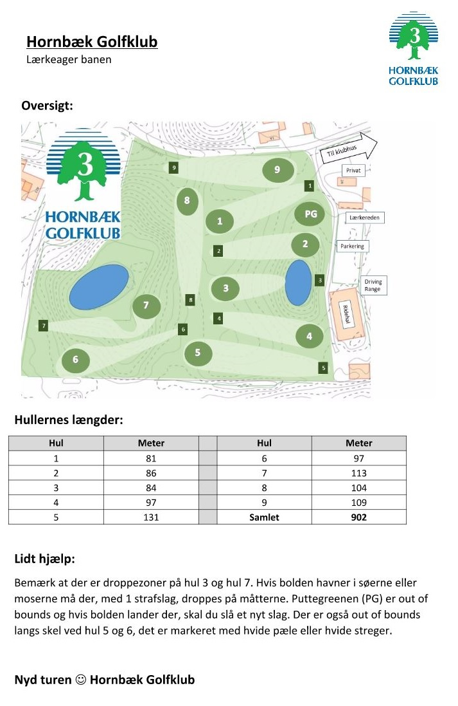

<div class="pages">
  <div data-page="tidsbestilling-og-greenfee" class="page navbar-fixed toolbar-fixed" >
    <div class="navbar">
      <div class="navbar-inner">
        <div class="left">
          <a href="#" class="link back icon-only"><i class="icon icon-back"></i></a>
          <!-- <a href="#" class="back link icon-only"><i class="icon icon-back"></i></a> -->
        </div>
        <div class="center">Tidsbestilling og Greenfee</div>
        <!-- <div class="right"></div> -->
        <div class="right">
        </div>
      </div>
    </div>
    <div class="page-content" style="padding-top:45px;">
       <div class="content-block">
          <p>Lærkeager - par 3 banen</p>
          <p>Hvordan kan jeg komme ud og spille:<br />
          Hvis du som gæst ønsker du at spille en (eller flere) runder golf på Hornbæk Golfklubs par 3 bane - Lærkeager bane - kræver det ingen golfmæssige forudsætninger. Men du skal inden du starter din runde have betalt (greenfee) for at spille runden. Herefter skal du følge de opsatte ordensregler for spil på banen.</p>
          <p>Greenfee:<br />
          Du kan købe greenfee i Sekretariatet ved klubbens klubhus eller du kan trække det i den opsatte automat i Lærkereden (Klubhuset ved par 3 banen). I Shoppen har du mulighed for at købe eller leje golfudstyr, samt aftale træningslektioner med klubbens Proer. Shoppen har åben alle dage i sæsonen - man-tors 09:00-18:00, fre 09:00-17:00, lør, søn og helligdage 09:00-15:00.</p>
          <p>Når du har købt og betalt Greenfee har du samtidig ret til at benytte klubbens træningsfaciliteter: Drivingrange, Puttinggreen samt Indspilsgreen såvel før som efter du spiller på Lærkeager banen.<br />
          Din Greenfee gælder for spil hele dagen.</p>
          <p>Priser:</p>
          
          <p>Rabatter</p>
          <p>Hvis en voksen gæst spiller i selskab med et aktivt medlem af Hornbæk Golfklub, ydes 50 kr. rabat. Se priser ovenfor. Op til 3 gæsterabatter pr. spiller i samme bold som et medlem. Denne rabat gælder ikke i forbindelse med andre rabatter eller ved deltagelse i arrangementer og turneringer på banen.</p>
          <p>Tidsbestilling:</p>
          
          <p>Der kan forudbestilles starttid på Lærkeager banen. Det kan du gøre online via Golfbox, ved at kontakte Sekratariatet eller på den opsatte terminal i Lærkereden. Det er også på denne terminal at du berkæfter dine tider.</p>
          <p>Gruppebookninger:</p>
          <p>Grupper af gæster og medlemmer på minimum 16 personer kan via sekretariatet booke tider på Lærkeager banen. Tiden bookes som en samlet blokering og der regnes med 10 minutter mellem starterne ved beregning af bookningens længde.</p>
          <p>Ordningen kan benyttes sammen med de til enhver tid gældende rabatordninger. Alle klubbens øvrige regler for gæster og spil på banen skal overholdes.</p>
          
        </div>
    </div>
    </div>
    </div>
  </div>
</div>
